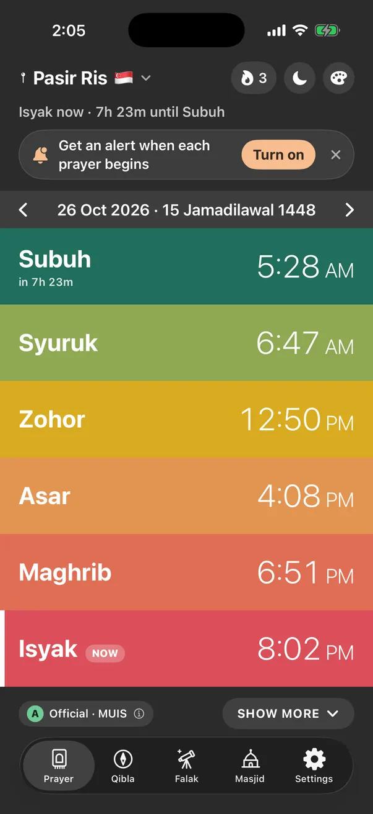
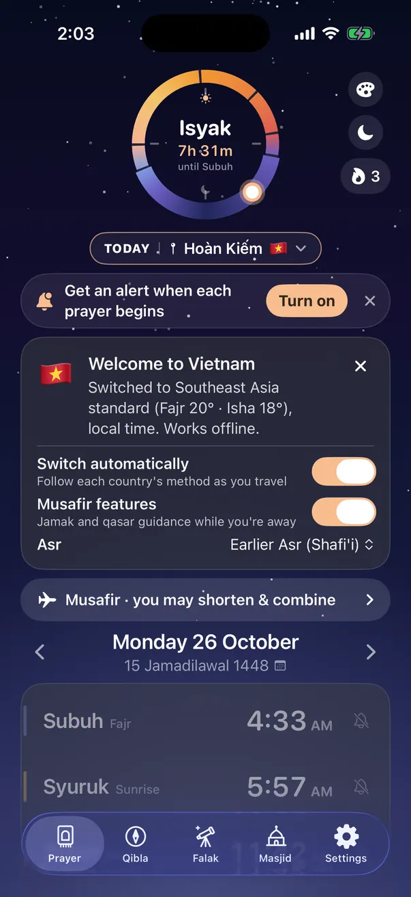
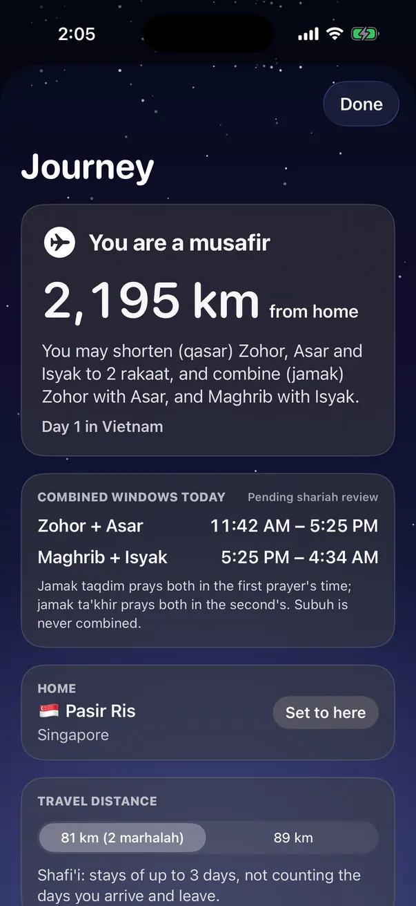
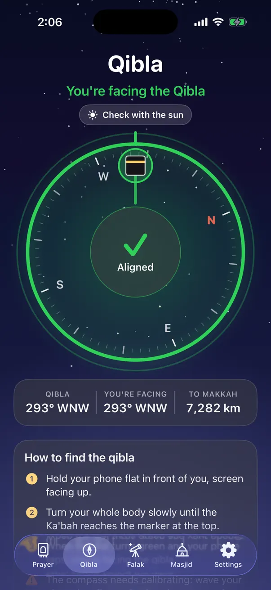
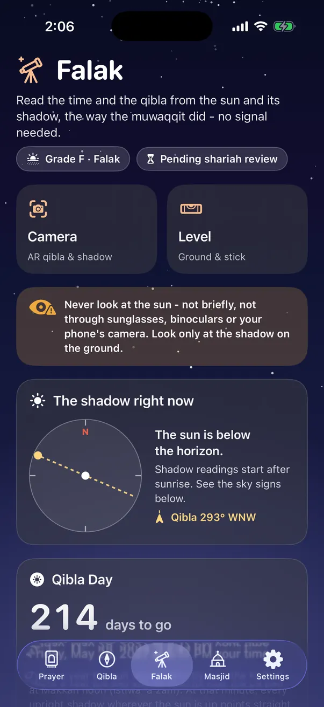
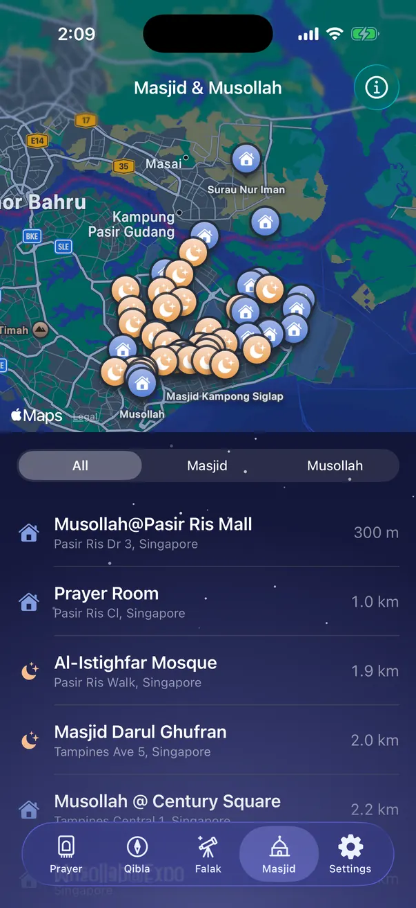
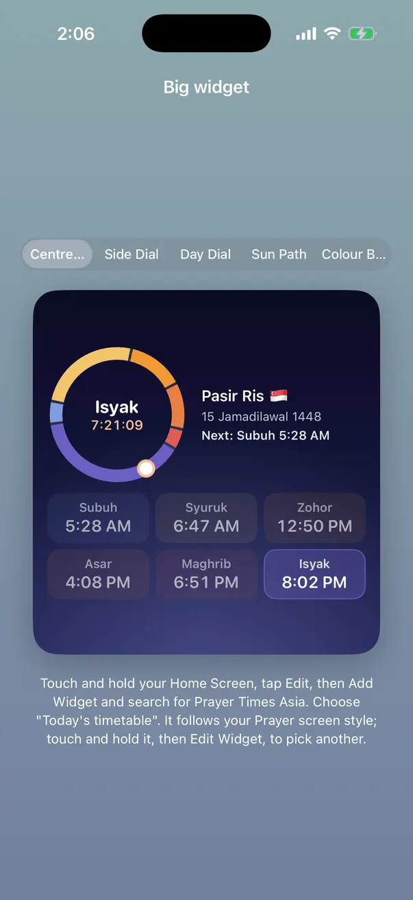

Know when to pray, wherever you land in Asia.
Prayer times and qibla for Muslims living and travelling across Asia. Official MUIS and JAKIM timetables at home, the right local method the moment you cross a border, and it keeps working with no signal.
Built fisabilillah in Singapore by Nasar Pte Ltd.
- Official MUIS & JAKIM timetables
- Works offline
- Switches country for you
- Location stays on your phone
- Free, no ads
Everything you need for salah, nothing you don't.
Made for people who live in one country and travel to the next, and tested against the official timetables every day of the year.
The times you trust, at a glance
A live dial counts down to the next prayer, with the whole day underneath. Pick the look you like: a centre dial, a side dial, a sun path or bright colour bands, in light or dark.
- Singapore uses the official MUIS timetable, Malaysia the official JAKIM e-Solat table for your zone
- Alerts when each prayer begins, Jumaat on Fridays
- Hijri date, Dhuha and the blessed night times
- Home Screen and Lock Screen widgets on iPhone and Android

Land in a new country, the times are already right
Most prayer apps use one setting for everyone. Prayer Times Asia knows how each country works out its prayer times and switches the moment you arrive, with a short welcome card that tells you what changed.
- Musafir guidance: how far you are from home, and whether you may shorten (qasar) and combine (jamak)
- Shafi'i and Hanafi distances and days
- Worked out on your phone, so no data roaming is needed


Face the Kaabah in one glance
A calm compass that turns green and taps your hand when you face the qibla. Falak tools read the time and the qibla from the sun and its shadow, the way the muwaqqit did, with no signal needed.
- Bearing and distance to Makkah
- Qibla Day countdown, for checking with the sun
- Shadow and sun readings, now with a falak committee member for review


Find a masjid or musollah nearby
See masjids, musollahs and prayer rooms around you on a map and in a list, with how far each one is. Handy in a new city, or in a mall at Asar.


Exact at home. Ready on the road.
Each country uses its own method, Asr school and prayer names, so the times match what the local masjid announces.
Official timetables
Downloaded once a year and kept on your phone.
Local method, worked out on your phone
No connection needed.
On your phone today. On every screen next.
The same accurate times, wherever you look: on your wrist, your desk, your TV, and the screen at your masjid.
Web app
Works in any browser on any phone or computer. Add it to your Home Screen and it opens like an app, even offline.
iPhone and Android
Widgets, a Lock Screen countdown and prayer alerts. In testing now, coming to the App Store and Google Play.
Apple Watch and Wear OS
The next prayer on your wrist, with a gentle tap when it's time and the qibla on your watch face.
Mac and Windows
A quiet countdown in your menu bar or taskbar, so a busy workday never runs past Zohor or Asar.
TV at home
Today's times on the big screen for the whole family, on Apple TV, Android TV and Google TV.
Masjid display screens
A clear full-screen timetable for the masjid TV: azan and iqamah times, Jumu'ah and announcements, set up by the masjid.
Help us get it right for your community.
We want to work with imams and masjid committees across Asia so the app reflects how your community really prays. If you look after a masjid or musollah, we would love to hear from you.
- Check our times against your local timetable and tell us where they differ
- Share your iqamah and Jumu'ah times so nearby jamaah can find them
- Try the free masjid display screen on the TV in your masjid
- Tell us what your jamaah need, in your language
Start in under a minute.
It's free, with nothing to sign up for. Tell us what you think: every change so far started as someone's suggestion.
Any phone or computer
Open the web app in your browser and allow location. On a phone, use Share, then Add to Home Screen, to keep it like an app.
iPhone
The iPhone app is in testing through Apple's TestFlight. Ask for an invite and we'll send you a link.
Android
The Android app is coming to Google Play. Ask for the test version and we'll send it to you.
Good to know
Is it really free?
Yes. Prayer Times Asia is built fisabilillah by Nasar Pte Ltd. There are no third-party ads, no subscriptions and no in-app purchases.
How accurate are the times?
In Singapore and Malaysia the app uses the official MUIS and JAKIM timetables. When it has to work them out itself (offline, or in other countries), it uses each country's own method, checked against the official tables for every day of the year and set to err on the safe side, never before the prayer has begun.
Does it need the internet?
Only now and then. The year's timetable is kept on your phone, and everywhere else the times are worked out on the phone itself, so it keeps working on a plane, abroad or with no signal.
What happens to my location?
It stays on your phone. There is no account, no tracking and no analytics. The app only asks the official sources for your year's timetable (by zone, never your exact spot).
Is the musafir guidance a fatwa?
No. Jamak and qasar guidance is general information to help you plan. When unsure, follow your local religious authority.
My masjid's times are different. What should I do?
Please tell us. Send the masjid's name and a photo of its timetable to hello@prayertimes.asia, or use "Help verify times" inside the app.